Variational Gradient Matching for Dynamical Systems
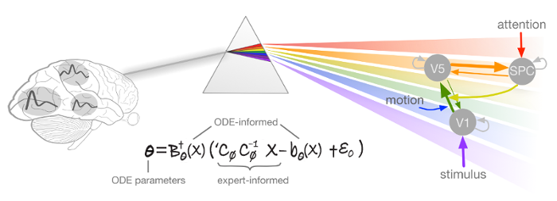
Author: Nico Stephan Gorbach and Stefan Bauer, Institute of Machine Learning, ETHZ, email: nico.gorbach@gmail.com
Instructional code for " Scalable Variational Inference for Dynamical Systems " by Nico S. Gorbach, Stefan Bauer and Joachim M. Buhmann. Paper available at https://papers.nips.cc/paper/7066-scalable-variational-inference-for-dynamical-systems.pdf. Please cite our paper if you use our program for a further publication.
Contents
Overview
This document presents a workflow code for applying gradient matching with Gaussian processes to Dynamic Causal Models. We start by introducing the gradient matching framework, followed by an introduction to dynamic causal models. The code for a simulated three-state system is presented thereafter, starting with the inputs and ending with the inferred couplings between the neuronal populations in the brain. Discussion and future work followed by the appendix is given at the end.
Introduction to Variational Gradient Matching
The essential idea of gradient matching (Calderhead et al., 2002) is to match the gradient governed by the ODE with that inferred from the observations. In contrast to previous approaches gradient matching introduces a prior over states instead of a prior over ODE parameters. The advantages of gradients matching two-fold:
- A prior over the functional form of state dynamics as opposed to ODE parameters facilitates a more expert-aware estimation of ODE parameters since experts can provide a better a priori description of state dynamics than ODE parameters.
- Gradient matching yields a global gradient as opposed to a local one which offers significant computational advantages and provides access to a rich source of sophisticated optimization tools.
Deterministic Dynamical Systems
A deterministic dynamical system is represented by a set of 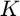 ordinary differential equations (ODEs) with model parameters  that describe the evolution of states 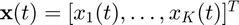 such that:
that describe the evolution of states 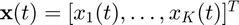 such that:
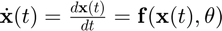.
A sequence of observations, 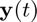, is usually contaminated by some measurement error which we assume to be normally distributed with zero mean and variance for each of the states, i.e. 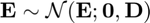, with 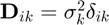. For 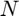 distinct time points the overall system may therefore be summarized as:
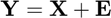,
where
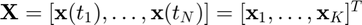,
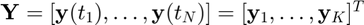,
and 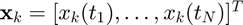 is the 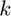'th state sequence and 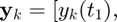 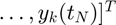 are the observations. Given the observations 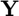 and the description of the dynamical system \eqref{eqn:ODE}, the aim is to estimate both state variables 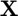 and parameters 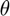. While numerical integration can be used for both problems, its computational cost is prohibitive for large systems and motivates the grid free method outlined in the following section.
Gaussian Process based Gradient Matching
Gaussian processes based gradient matching was originally motivated in Calderhead et al (2008) and further developed in Dondelinger et al (2013). In this section we provide a novel derivation for gradient matching with Gaussian processes. Formally, gradient matching with Gaussian processes assumes a joint Gaussian process prior on states and their derivatives:
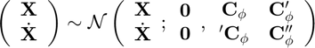,
with 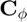 denoting the covariance matrix defined by a given kernel with hyperparameters 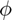. 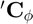 and 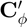 are the cross-covariances between states and their derivatives and 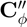 denotes the autocovariance for state derivatives. Since Gaussian processes are closed under differentiation, we can determine the cross-covariances and between states and their derivatives as well as the autocovariance between state derivatives. In particular, the entries of , and are given by:
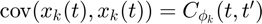
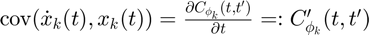
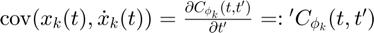
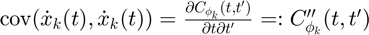.
Given the joint distribution over states and their derivatives \ref{eqn:joint_state_and_derivatives} as well as the ODEs \ref{eqn:ODE}, we therefore have two expressions for the state derivatives:
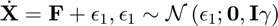
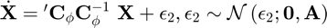
where 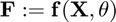, 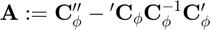 and 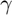 is the error variance in the ODEs. Note that, in a deterministic system, the output of the ODEs 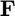 should equal the state derivatives 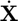. However, in the first equation of \ref{eqn:state_derivative_expressions} we relax this contraint by adding stochasticity to the state derivatives in order to compensate for a potential model mismatch. The second equation in \ref{eqn:state_derivative_expressions} is obtained by deriving the conditional distribution for from the joint distribution in \ref{eqn:joint_state_and_derivatives}. Equating the two expressions in \ref{eqn:state_derivative_expressions} we can eliminate the unknown state derivatives :
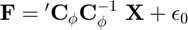,
with 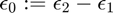.
Variational Inference for Gradient Matching by exploiting Local Linearity in ODEs
For subsequent sections in this chapter, we consider only dynamical systems that are locally linear with respect to ODE parameters and individual states 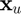. Such ODEs include mass-action kinetics and are given by:
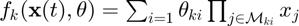,
with 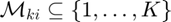 describing the state variables in each factor of the equation i.e. the functions are linear in parameters and contain arbitrary large products of monomials of the states. This formulation includes models that exhibit periodicity as well as high nonlinearity and especially physically realistic reactions in systems biology \citep{schillings2015efficient}.
A crucial aspect to notice in equation \ref{eqn:equating_derivative_eqns} and one of the main contributions of this chapter is that, for a restricted class of ODEs such as those described by equation \ref{eqn:ode_spec}, the conditional distributions 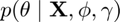 and 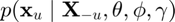 are tractable even when the ODEs are nonlinear in all of the states. To see this, we first rewrite the ODEs as a linear combination in the parameters:
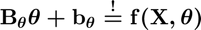,
where matrices 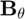 and 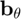 are defined such that the ODEs 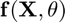 are expressed as a linear combination in . Inserting \ref{eqn:lin_comb_param} into \ref{eqn:equating_derivative_eqns} and solving for yields:
 ,
,
where 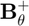 denotes the pseudo-inverse of . We can therefore derive the posterior distribution over ODE parameters:
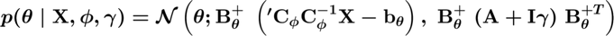.
Similarly, to derive the posterior over an individual state , we rewrite the expression 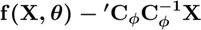 in equation \ref{eqn:equating_derivative_eqns} as a linear combination in the individual state :
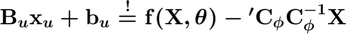.
Inserting \ref{eqn:lin_comb_states} into \ref{eqn:equating_derivative_eqns} and solving for yields:
,
where denotes the pseudo-inverse of . We can therefore derive the posterior distribution over an individual state :
,
with denoting the set of all states except state .
Mean-field gradient matching (mean-field GM) at its core can be interpreted as iterating between computing the distribution given the moments of the state distributions and given the moments of the ODE parameter distribution. Such an iterative scheme is derived by coordinate ascent mean-field variational inference described in section \ref{sec:mean_field}.
Mean-field Variational Inference
To infer the parameters , we want to find the maximum a posteriori estimate (MAP):
.
However, the integral above is intractable in most cases due to the strong couplings induced by the nonlinear ODEs which appear in the term . Notice that, since the ``ODE-informed'' distribution in the equation above does not depend on the observations and the ``data-informed'' distribution does not depend on the ODEs (i.e. independent of ), the ODE parameters depend only \textit{indirectly} on the observations through the states . In other words, given the states , the ODE parameters are conditionally independent of the observations . The disadvantage of such a modeling assumption is that it demands a reasonably good estimation of the state trajectories since the state trajectories provide the only mechanistic link between the observations and the ODE parameters .
The data-informed distribution p(\mathbf{X} \mid \mathbf{Y}, \boldmath\phi,\boldmath\sigma) in the equation above can be determined analytically using Gaussian process regression with the GP prior :
,
where and .
We use mean-field variational inference to establish variational lower bounds that are analytically tractable by decoupling state variables from the ODE parameters as well as decoupling the state variables from each other. We first note that, since the ODEs described by \ref{eqn:ode_spec} are \textit{locally linear}, both conditional distributions and are analytically tractable and Gaussian distributed as mentioned previously in section \ref{sec:variational_inference_for_gradient_matching}.
The decoupling is induced by designing a variational distribution which is restricted to the family of factorial distributions:
.
The particular form of and are designed to be Gaussian distributed which places them in the same family as the true full conditional distributions. To find the optimal factorial distribution we minimize the Kullback-Leibler divergence between the variational and the true posterior distribution:
,
where is the proxy distribution. The proxy distribution that minimizes the KL-divergence \ref{eqn:proxy_objective} depends on the true full conditionals and is given by:
.
Further expanding the optimal proxy distribution in \ref{eqn:proxies} for yields:
,
which can be normalized analytically due to its exponential quadratic form. In (a) we recall that the ODE parameters depend only indirectly on the observations through the states and in (b) we substitute by its density given in \ref{eqn:posterior_over_param}.
Similarly, we expand the proxy over the individual state :
,
which, once more, can be normalized analytically due to its exponential quadratic form. In (a) we decompose the full conditional into an ODE-informed distribution and a data-informed distribution and in (b) we substitute the ODE-informed distribution  with its density given by \ref{eqn:posterior_over_state}.
with its density given by \ref{eqn:posterior_over_state}.
We can therefore minimize the KL-divergence \ref{eqn:proxy_objective} by coordinate descent (where each step is analytically tractable) by iterating between determining the proxy for the distribution over ODE parameters and the proxies for the distribution over individual states .
% Clear workspace and close figures clear all; close all;
Simulation Settings
simulation.state_obs_variance = @(mean)(bsxfun(@times,[0.5^2,0.5^2],... ones(size(mean)))); % observation noise simulation.ode_param = [2 1 4 1]; % true ODE parameters [2 1 4 1] is used as a benchmark in many publications; simulation.final_time = 2; % end time for integration simulation.int_interval = 0.01; % integration interval simulation.time_samp = 0:0.1:simulation.final_time; % sample times for observations simulation.init_val = [5 3]; % state values at first time point
User Input
Kernel
kernel.param_sym = sym(['rbf_param%d'],[1,2]); assume(kernel.param_sym,'real'); kernel.time1 = sym('time1'); assume(kernel.time1,'real'); kernel.time2 = sym('time2'); assume(kernel.time2,'real'); kernel.func = kernel.param_sym(1).*exp(-(kernel.time1-kernel.time2).^2./(kernel.param_sym(2).^2)); kernel.param = [10,0.5]; % set kernel parameter values kernel.name = 'rbf'; % kernel name
Estimation
state.derivative_variance = [6,6]; % gamma for gradient matching model time.est = 0:0.1:4; % estimation times coord_ascent_numb_iter = 200; % number of coordinate ascent iterations
Symbols
symbols.state = {'[prey]','[predator]'}; % symbols of states in 'ODEs.txt' file
symbols.param = {'[\theta_1]','[\theta_2]','[\theta_3]','[\theta_4]'}; % symbols of parameters in 'ODEs.txt' file
Path to ODEs
path.ode = './ODEs.txt'; % path to system of ODEs
Import ODEs
ode = import_odes(path.ode,symbols);
Simulate Data
Generate ground truth by numerical integration
[state,time,ode] = generate_ground_truth(time,state,ode,symbols,simulation);
Generate state observations
[state,time,obs_to_state_relation] = generate_state_obs(state,time,simulation);
Symbols
state.sym.mean = sym('x%d%d',[length(time.est),length(ode.system)]); state.sym.variance = sym('sigma%d%d',[length(time.est),length(ode.system)]); %assume(state.sym.mean,'real'); assume(state.sym.variance,'real'); ode_param.sym.mean = sym('param%d',[length(symbols.param),1]); assume(ode_param.sym.mean,'real');
Setup plots
[h,h2] = setup_plots(state,time,simulation,symbols);
Prior on States and State Derivatives
[Lambda,dC_times_invC,inv_Cxx,time.est] = kernel_function(kernel,state,time.est);
Preprocessing
Observation mean and covariance
[mu,inv_sigma] = GP_regression(state,inv_Cxx,obs_to_state_relation,simulation);
Couplings
coupling_idx = find_couplings_in_odes(ode,symbols);
Rewrite ODEs as linear combination in parameters
[ode_param.B,ode_param.b,ode_param.r,ode_param.B_times_Lambda_times_B] = rewrite_odes_as_linear_combination_in_parameters(ode,symbols);
Rewrite ODEs as linear combination in individual states
state = rewrite_odes_as_linear_combination_in_ind_states(state,ode,symbols,coupling_idx.states);
Proxies for ODE Parameters and Individual States
state.proxy.mean = mu;
for i = 1:coord_ascent_numb_iter
Proxy for ODE parameters
[param_proxy_mean,param_proxy_inv_cov] = proxy_for_ode_parameters(state.proxy.mean,Lambda,dC_times_invC,ode_param,symbols);
if i==1 || ~mod(i,20); plot_results(h,h2,state,time,simulation,param_proxy_mean,'not_final'); end
Proxy for individual states
state.proxy.mean = proxy_for_ind_states(state.lin_comb,state.proxy.mean,param_proxy_mean',...
dC_times_invC,coupling_idx.states,symbols,mu,inv_sigma);
end
Final result
plot_results(h,h2,state,time,simulation,param_proxy_mean,'final');
Subroutines
Import ODEs
function ode = import_odes(path_ode,symbols) tmp = importdata(path_ode); for k = 1:length(tmp) for u = 1:length(symbols.state); tmp{k} = strrep(tmp{k},[symbols.state{u}],['state(:,' num2str(u) ')']); end for j = 1:length(symbols.param); tmp{k} = strrep(tmp{k},symbols.param{j},['param(' num2str(j) ')']); end end for k = 1:length(tmp); ode.system{k} = str2func(['@(state,param)(' tmp{k} ')']); end end
Generate ground truth
function [state,time,ode] = generate_ground_truth(time,state,ode,symbols,simulation) time.true=0:simulation.int_interval:simulation.final_time; % true times Tindex=length(time.true); % index time TTT=length(simulation.time_samp); % number of sampled points itrue=round(simulation.time_samp./simulation.int_interval+ones(1,TTT)); % Index of sample time in the true time param_sym = sym(['param%d'],[1,length(symbols.param)]); assume(param_sym,'real'); state_sym = sym(['state%d'],[1,length(symbols.state)]); assume(state_sym,'real'); for i = 1:length(ode.system) ode.system_sym(i) = ode.system{i}(state_sym,param_sym); end ode_system_mat = matlabFunction(ode.system_sym','Vars',{state_sym',param_sym'}); [~,OutX_solver]=ode45(@(t,x) ode_system_mat(x,simulation.ode_param'), time.true, simulation.init_val); state.true_all=OutX_solver; state.true=state.true_all(itrue,:); end
Generate observations of states
function [state,time,obs_to_state_relation] = generate_state_obs(state,time,simulation) % State observations state_obs_variance = simulation.state_obs_variance(state.true); state.obs = state.true + sqrt(state_obs_variance) .* randn(size(state.true)); % Relationship between states and observations if length(simulation.time_samp) < length(time.est) time.idx = munkres(pdist2(simulation.time_samp',time.est')); time.ind = sub2ind([length(simulation.time_samp),length(time.est)],1:length(simulation.time_samp),time.idx); else time.idx = munkres(pdist2(time.est',simulation.time_samp')); time.ind = sub2ind([length(time.est),length(simulation.time_samp)],1:length(time.est),time.idx); end time.obs_time_to_state_time_relation = zeros(length(simulation.time_samp),length(time.est)); time.obs_time_to_state_time_relation(time.ind) = 1; state_mat = eye(size(state.true,2)); obs_to_state_relation = sparse(kron(state_mat,time.obs_time_to_state_time_relation)); time.samp = simulation.time_samp; end
Kernel function
function [Lambda,dC_times_invC,inv_Cxx,time_est] = kernel_function(kernel,state,time_est) % kernel derivatives for i = 1:length(kernel) kernel.func_d = diff(kernel.func,kernel.time1); kernel.func_dd = diff(kernel.func_d,kernel.time2); GP.fun = matlabFunction(kernel.func,'Vars',{kernel.time1,kernel.time2,kernel.param_sym}); GP.fun_d = matlabFunction(kernel.func_d,'Vars',{kernel.time1,kernel.time2,kernel.param_sym}); GP.fun_dd = matlabFunction(kernel.func_dd,'Vars',{kernel.time1,kernel.time2,kernel.param_sym}); end % populate GP covariance matrix for t=1:length(time_est) C(t,:)=GP.fun(time_est(t),time_est,kernel.param); dC(t,:)=GP.fun_d(time_est(t),time_est,kernel.param); Cd(t,:)=GP.fun_d(time_est,time_est(t),kernel.param); ddC(t,:)=GP.fun_dd(time_est(t),time_est,kernel.param); end % GP covariance scaling [~,D] = eig(C); perturb = abs(max(diag(D))-min(diag(D))) / 10000; if any(diag(D)<1e-6); C(logical(eye(size(C,1)))) = C(logical(eye(size(C,1)))) + perturb.*rand(size(C,1),1); end [~,D] = eig(C); if any(diag(D)<0); error('C has negative eigenvalues!'); elseif any(diag(D)<1e-6); warning('C is badly scaled'); end inv_Cxx = inv_chol(chol(C,'lower')); dC_times_invC = dC * inv_Cxx; % plot GP prior samples figure(3); hold on; plot(time_est,mvnrnd(zeros(1,length(time_est)),C(:,:,1),3),'LineWidth',2); h1 = gca; h1.FontSize = 20; h1.XLabel.String = 'time (s)'; h1.YLabel.String = 'state value'; h1.Title.String = [kernel.name ' kernel']; % determine \Lambda: A = ddC - dC_times_invC * Cd; inv_Lambda = A + state.derivative_variance(1) .* eye(size(A)); inv_Lambda = 0.5.*(inv_Lambda+inv_Lambda'); Lambda = inv_chol(chol(inv_Lambda,'lower')); end
GP regression
function [mu_u,inv_sigma_u,state] = GP_regression(state,inv_Cxx,obs_to_state_relation,simulation) state_obs_variance = simulation.state_obs_variance(state.obs); numb_states = size(state.sym.mean,2); numb_time_points = size(state.sym.mean,1); inv_Cxx_tmp = num2cell(inv_Cxx(:,:,[1,1]),[1,2]); inv_Cxx_blkdiag = sparse(blkdiag(inv_Cxx_tmp{:})); dim = size(state_obs_variance,1)*size(state_obs_variance,2); D = spdiags(reshape(state_obs_variance.^(-1),[],1),0,dim,dim) * speye(dim); % covariance matrix of error term (big E) A_times_D_times_A = obs_to_state_relation' * D * obs_to_state_relation; inv_sigma = A_times_D_times_A + inv_Cxx_blkdiag; mu = inv_sigma \ obs_to_state_relation' * D * reshape(state.obs,[],1); mu_u = zeros(numb_time_points,numb_states); for u = 1:numb_states idx = (u-1)*numb_time_points+1:(u-1)*numb_time_points+numb_time_points; mu_u(:,u) = mu(idx); end inv_sigma_u = zeros(numb_time_points,numb_time_points,numb_states); for i = 1:numb_states idx = [(i-1)*numb_time_points+1:(i-1)*numb_time_points+numb_time_points]; inv_sigma_u(:,:,i) = inv_sigma(idx,idx); end end
Setup plots
function [h,h2] = setup_plots(state,time,simulation,symbols) for i = 1:length(symbols.param); symbols.param{i} = symbols.param{i}(2:end-1); end figure(1); set(1, 'Position', [0, 200, 1200, 500]); h2 = subplot(1,3,1); h2.FontSize = 20; h2.Title.String = 'ODE parameters'; set(gca,'XTick',[1:length(symbols.param)]); set(gca,'XTickLabel',symbols.param); hold on; drawnow for u = 1:2 h{u} = subplot(1,3,u+1); cla; plot(time.true,state.true_all(:,u),'LineWidth',2,'Color',[217,95,2]./255); hold on; plot(simulation.time_samp,state.obs(:,u),'*','Color',[217,95,2]./255,'MarkerSize',10); h{u}.FontSize = 20; h{u}.Title.String = symbols.state{u}(2:end-1); hold on; end end
Find ODE couplings
function coupling_idx = find_couplings_in_odes(ode,symbols) % state couplings state_sym = sym(['state%d'],[1,length(ode.system)]); assume(state_sym,'real'); for k = 1:length(ode.system) tmp_idx = ismember(state_sym,symvar(ode.system_sym(k))); tmp_idx(:,k) = 1; ode_couplings_states(k,tmp_idx) = 1; end for u = 1:length(symbols.state) coupling_idx_tmp = find(ode_couplings_states(:,u)); coupling_idx.states{u} = coupling_idx_tmp; end end
Rewrite ODEs as linear combination in parameters
function [B,b,r,B_times_Lambda_times_B] = rewrite_odes_as_linear_combination_in_parameters(ode,symbols) param_sym = sym(['param%d'],[1,length(symbols.param)]); assume(param_sym,'real'); state_sym = sym(['state%d'],[1,length(symbols.state)]); assume(state_sym,'real'); state0_sym = sym(['state0']); assume(state0_sym,'real'); state_const_sym = sym(['state_const']); assume(state_const_sym,'real'); % Rewrite ODEs as linear combinations in parameters [B_sym,b_sym] = equationsToMatrix(ode.system_sym,param_sym); % Product of ODE factors (product of Gaussians) for k = 1:length(ode.system) B_sym(k,B_sym(k,:)=='0') = state0_sym; for i = 1:length(B_sym(k,:)) sym_var = symvar(B_sym(k,i)); if isempty(sym_var) B_sym(k,i) = B_sym(k,i) + state0_sym; end end B{k} = matlabFunction(B_sym(k,:),'Vars',{state_sym,state0_sym,state_const_sym}); b{k} = matlabFunction(b_sym(k,:),'Vars',{state_sym,state0_sym,state_const_sym}); end B_times_Lambda_times_B = @(B,Lambda)(B' * B); r = @(B,Lambda,dC_times_invC,state,b)(B' * (dC_times_invC * state + b)); end
Rewrite ODEs as linear combination in individual states
function state = rewrite_odes_as_linear_combination_in_ind_states(state,ode,symbols,coupling_idx) state_sym = sym('state%d',[1,length(symbols.state)]); assume(state_sym,'real'); param_sym = sym('param%d',[1,length(symbols.param)]); assume(param_sym,'real'); for u = 1:length(symbols.state) for k = coupling_idx{u}' [B,b] = equationsToMatrix(ode.system{k}(state_sym,param_sym'),state_sym(:,u)); state.lin_comb{u,k}.B = matlabFunction(B,'Vars',{state_sym,param_sym}); state.lin_comb{u,k}.b = matlabFunction(b,'Vars',{state_sym,param_sym}); end end end
Proxy for ODE parameters
function [param_proxy_mean,param_inv_cov] = proxy_for_ode_parameters(state_proxy_mean,Lambda,dC_times_invC,ode_param,symbols) B_global = []; b_global = []; state0 = zeros(size(dC_times_invC,1),1); param_inv_cov = zeros(length(symbols.param)); local_mean_sum = zeros(length(symbols.param),1); for k = 1:length(symbols.state) B = ode_param.B{k}(state_proxy_mean,state0,... ones(size(state_proxy_mean,1),1)); local_inv_cov = ode_param.B_times_Lambda_times_B(B,Lambda); b = ode_param.b{k}(state_proxy_mean,state0,ones(size(state_proxy_mean,1),1)); local_mean = ode_param.r(B,Lambda,dC_times_invC,state_proxy_mean(:,k),b); param_inv_cov = param_inv_cov + local_inv_cov; local_mean_sum = local_mean_sum + local_mean; B_global = [B_global;B]; b_tmp = b; if length(b_tmp)==1; b_tmp=zeros(size(dC_times_invC,1),1);end b_global = [b_global;b_tmp]; end [~,D] = eig(param_inv_cov); if any(diag(D)<0) warning('param_inv_cov has negative eigenvalues!'); elseif any(diag(D)<1e-3) warning('param_inv_cov is badly scaled') disp('perturbing diagonal of param_inv_cov') perturb = abs(max(diag(D))-min(diag(D))) / 10000; param_inv_cov(logical(eye(size(param_inv_cov,1)))) = param_inv_cov(logical(eye(size(param_inv_cov,1)))) ... + perturb.*rand(size(param_inv_cov,1),1); end param_proxy_mean = pinv(param_inv_cov) * local_mean_sum; end
Proxy for individual states
function [state_mean,state_inv_cov] = proxy_for_ind_states(lin_comb,state,... ode_param,dC_times_invC,coupling_idx,symbols,mu,inv_sigma) for u = 1:length(symbols.state) state_inv_cov(:,:,u) = zeros(size(dC_times_invC)); local_mean_sum = zeros(size(dC_times_invC,1),1); for k = coupling_idx{u}' if k~=u B = diag(lin_comb{u,k}.B(state,ode_param)); if size(B,1) == 1; B = B.*eye(size(dC_times_invC,1)); end state_inv_cov(:,:,u) = state_inv_cov(:,:,u) + B' * B; local_mean_sum = local_mean_sum + B' * (dC_times_invC * state(:,k) ... + lin_comb{u,k}.b(state,ode_param)); else B = diag(lin_comb{u,k}.B(state,ode_param)); if size(B,1) == 1; B = B.*eye(size(dC_times_invC,1)); end B = B - dC_times_invC; state_inv_cov(:,:,u) = state_inv_cov(:,:,u) + B' * B; l = lin_comb{u,k}.b(state,ode_param); if length(l)==1; l = zeros(length(local_mean_sum),1); end local_mean_sum = local_mean_sum + B' * l; end end state_mean(:,u) = (state_inv_cov(:,:,u) + inv_sigma(:,:,u)) \ (local_mean_sum + (inv_sigma(:,:,u) * mu(:,u))); end end
Plot results
function plot_results(h,h2,state,time,simulation,param_proxy_mean,plot_type) for u = 1:2 if strcmp(plot_type,'final') hold on; plot(h{u},time.est,state.proxy.mean(:,u),'Color',[117,112,179]./255,'LineWidth',2); else hold on; plot(h{u},time.est,state.proxy.mean(:,u),'LineWidth',0.1,'Color',[0.8,0.8,0.8]); end end cla(h2); b = bar(h2,[1:length(param_proxy_mean)],[simulation.ode_param',param_proxy_mean]); b(1).FaceColor = [217,95,2]./255; b(2).FaceColor = [117,112,179]./255; h2.XLim = [0.5,length(param_proxy_mean)+0.5]; h2.YLimMode = 'auto'; end